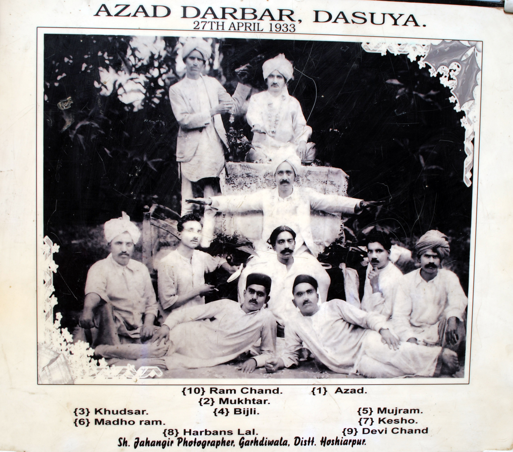

A legendary Punjabi and Urdu poet whose timeless verses continue to move and inspire readers today.
Biography

Azad Darbar, Dasuya
Ustad Harbans Lal "Mujrim" Dasuhavi was born in 1909 in the historic town of Dasuya, Punjab. From an early age, he exhibited an exceptional command over language and poetic expression, attaining mastery in both Punjabi and Urdu with rare ease and depth.
Rooted in the classical Ustad–Shagird tradition of the Azad Darbar, Dasuya, Ustad Mujrim Ji emerged as a distinguished torchbearer of a revered literary lineage. This tradition traces its origins to Pandit Shraddha Ram Phillauri the composer of the immortal hymn "Om Jai Jagdish Hare". It was carried forward by his disciple Ustad Mulkh Raj "Azad" and later strengthened by Ustad Khudmukhtar Sahib, under whom the foundations of this poetic parampara were firmly established.
Ustad Mujrim Dasuhavi inherited this sacred responsibility with humility and devotion, shaping it through his own powerful voice and vision. His poetry spanning ghazals, poems, bait, folk songs, and devotional verse explored love, loss, spiritual inquiry, social reform, and the moral conscience of society. His takhallus "Mujrim" (the accused) reflected a deep inward gaze, marked by emotional honesty and self-examination.
Beyond his literary achievements, he was a revered mentor whose influence extended across Punjab through hundreds of disciples. His mushairas were renowned for their intensity and gravitas, leaving a lasting impression on audiences and fellow poets alike. After him, the mantle of this living tradition passed to his janasheen, Ustad Deepak Jatoi, ensuring the continuity of the Ustad–Shagird parampara.
His literary legacy was also carried forward within his family by his son, the renowned Punjabi and Urdu poet Adarsh Kumar Darshi, who upheld and enriched the poetic values and discipline inherited from his father.
Ustad Mujrim Ji passed away in 1985, leaving behind a legacy that remains intellectually resonant and spiritually alive, continuing to guide, inspire, and challenge generations of readers and poets.
उस्ताद हरबंस लाल "मुजरिम" दसुहवी का जन्म 1909 में पंजाब के ऐतिहासिक शहर दसूया में हुआ था। बचपन से ही उन्होंने भाषा और काव्य अभिव्यक्ति पर असाधारण अधिकार प्रदर्शित किया, पंजाबी और उर्दू दोनों में दुर्लभ सहजता और गहराई के साथ महारत हासिल की।
आज़ाद दरबार, दसूया की शास्त्रीय उस्ताद-शागिर्द परंपरा में निहित, उस्ताद मुजरिम जी एक सम्मानित साहित्यिक वंश के प्रतिष्ठित मशालवाहक के रूप में उभरे। यह परंपरा अमर भजन "ओम जय जगदीश हरे" के रचयिता पंडित श्रद्धा राम फिल्लौरी से शुरू होती है। इसे उनके शिष्य उस्ताद मुल्ख राज "आज़ाद" ने आगे बढ़ाया और बाद में उस्ताद खुदमुख्तार साहिब ने इसे मजबूत किया, जिनके अधीन इस काव्य परंपरा की नींव मजबूती से स्थापित हुई।
उस्ताद मुजरिम दसुहवी ने इस पवित्र जिम्मेदारी को विनम्रता और समर्पण के साथ विरासत में लिया, इसे अपनी शक्तिशाली आवाज़ और दृष्टि के माध्यम से आकार दिया। गज़लों, कविताओं, बैत, लोक गीतों और भक्ति छंदों में फैली उनकी कविता ने प्रेम, हानि, आध्यात्मिक जिज्ञासा, सामाजिक सुधार और समाज की नैतिक चेतना की खोज की। उनका तख़ल्लुस "मुजरिम" (अभियुक्त) एक गहरी आंतरिक दृष्टि को प्रतिबिंबित करता है, जो भावनात्मक ईमानदारी और आत्म-परीक्षण से चिह्नित है।
अपनी साहित्यिक उपलब्धियों से परे, वे एक सम्मानित गुरु थे जिनका प्रभाव सैकड़ों शिष्यों के माध्यम से पूरे पंजाब में फैला। उनके मुशायरे अपनी तीव्रता और गंभीरता के लिए प्रसिद्ध थे, जो दर्शकों और साथी कवियों पर स्थायी प्रभाव छोड़ते थे। उनके बाद, इस जीवंत परंपरा की मशाल उनके जानशीन, उस्ताद दीपक जैतोई को सौंपी गई, जिससे उस्ताद-शागिर्द परंपरा की निरंतरता सुनिश्चित हुई।
उनकी साहित्यिक विरासत उनके परिवार में उनके बेटे, प्रसिद्ध पंजाबी और उर्दू कवि आदर्श कुमार दर्शी द्वारा भी आगे बढ़ाई गई, जिन्होंने अपने पिता से विरासत में मिले काव्य मूल्यों और अनुशासन को बरकरार रखा और समृद्ध किया।
उस्ताद मुजरिम जी का 1985 में निधन हो गया, एक ऐसी विरासत छोड़कर जो बौद्धिक रूप से प्रतिध्वनित और आध्यात्मिक रूप से जीवित है, पाठकों और कवियों की पीढ़ियों का मार्गदर्शन, प्रेरणा और चुनौती देती रहती है।
Selected Poems
Ghazal 1
चश्मे उल्फ़त अगर नहीं होगी
जिंदगी यूँ बसर नहीं होगी
तेरे क़दमों पे मेरी नज़रें हैं
फिर भी तेरी नज़र नहीं होगी
शबे-फुरकत का गम मआज़ अल्ला
शायद इसकी सहर नहीं होगी
Without the eyes of love
Life cannot be endured this way
My eyes rest at your feet
Yet your gaze will not be upon me
The sorrow of separation's night, God forgive
Perhaps it will have no dawn
Ghazal 2
शबे तारीक में ऐसे सितारे याद आते हैं
के जैसे गम के मारों को सहारे याद आते हैं
बड़ी कोशिश से चढ़ते हैं जु़बां पर नाम भी उनके
कभी नजऱों से दिल में थे उतारे याद आते हैं
In the dark night, such stars come to mind
Like support comes to those stricken by grief
Their name climbs to the tongue with great effort
Once brought into the heart through glances, they are remembered
Ghazal 3
जो इश्को वफ़ा से कोरे हैं, वो कारे नुमायाँ कर न सके
जो मौत से डर कर बैठ गए, वो ज़ीस्त का सामाँ कर न सके
तुम लुत्फ़े असीरी मत पूछो, माहौले कफ़स कुछ ऐसा था
हम फि़ करे गुलिस्तां क्या करते, जब जिक़्रे गुलिस्तां कर न सके
Those untouched by love and loyalty could not accomplish great deeds
Those who sat fearing death could not arrange the means of life
Do not ask of the pleasure of captivity, the cage's atmosphere was such
What would we do thinking of the garden, when we could not even speak of it
Ghazal 4
कदम बढ़ते गए अपने, अगर आहिस्ता आहिस्ता
मुसाफि़र ख़त्म कर लेंगे, सफ़र आहिस्ता आहिस्ता
जिगर का खून तुम, नखले तमन्ना को दिए जाओ
लगेंगे खुश्क डाली पर, समर आहिस्ता आहिस्ता
If our steps keep moving, even slowly, slowly
The traveler will complete the journey, slowly, slowly
Give the blood of your heart to the sapling of desire
Fruits will appear on the dry branch, slowly, slowly
Ghazal 5
आसमाँ पर जो चाँद तारे हैं
मेरी आहों के ही शरारे हैं
तुंद मौजों से कौन डरता है
यह भी अपने लिए किनारे हैं
आंसुओं की ज़ुबान को समझो
दर्द मंदों के यह इशारे हैं
The moon and stars in the sky
Are but sparks of my sighs
Who fears the fierce waves
These too are shores for us
Understand the language of tears
These are the signs of the afflicted
Ghazal 6
हमारी सांस इक चलती हुई तलवार होती है
फिर अपनी जिंदगी की हर घडी दुश्वार होती है
ज़बां से कुछ न कह लेकिन सरापा इल्तजा हो जा
दिले तारीक पर फिर बारिशे अन्वार होती है
Our breath is a moving sword
Thus every moment of our life becomes difficult
Say nothing with the tongue, but become entirely supplication
Upon the dark heart then rains a shower of lights
Ghazal 7
हर शै में तू है लेकिन मेरी नज़र कहाँ है
दिल में तलाश तेरी तू जल्वागर कहाँ है
साकी के पाँव पर ही सजदे गुजारता हूँ
वैसे मै जानता हूँ मस्जिद का दर कहाँ है
You are in everything, but where is my sight
Your search is in my heart, where are you manifest
I prostrate at the feet of the cupbearer
Though I know where the door to the mosque is
Ghazal 8
कोई बात लब तक न आई मगर
इशारों से हर बात होती रही
वो आयेंगे आ कर चले जायेंगे
यह क्या बात दिन रात होती रही
तसव्वुर के आलम में हर रोज़ ही
हमारी मुलाकात होती रही
No words came to the lips, yet
Every matter was conveyed through gestures
They will come and having come, will leave
What is this that kept happening day and night
In the realm of imagination, every day
Our meeting kept occurring
Ghazal 9
बशर जब तक तुम्हारे हुस्न पर शैदा नहीं होता
बसारत का उसे हासिल कभी दर्जा नहीं होता
मरीज़े इश्क पर जब तक नज़र उनकी नहीं होती
मरीज़े इश्क दुनिया में कभी अच्छा नहीं होता
Until a person becomes enamored of your beauty
They never attain the degree of true insight
Until your gaze falls upon the patient of love
The patient of love never recovers in this world
Ghazal 10
तसव्वुर का हर आलम भी है कितना कैफ़ का आलम
कि दिल ही दिल ने की बातें सवाल आया जवाब आया
हया आई तो ले आई वो अपने साथ शोख़ी भी
ज़माने के लिए तेरा कज़ा बन कर शबाब आया
Every state of imagination is such a state of ecstasy
That heart conversed with heart, question came, answer came
When modesty came, it brought mischief along with it
For the world, your youth came as destiny itself
Ghazal 11
हुस्न की दुनियां में ऐसे खो गए
हम भी गोया हूबहू बुत हो गए
संगदिल हैं कितने यह गुल्पोश भी
इश्क के रस्ते में कांटे बो गए
दिल में क्यों खामोश हैं अरमान यूँ
क्या हमेशा के लिए यह सो गए
So lost we became in the world of beauty
That we too became idols, as it were
How stone-hearted are these flower-wearers
They sowed thorns on the path of love
Why are desires so silent in the heart
Have they fallen asleep forever
Ghazal 12
इम्तियाज़े रंगो बू कुछ भी नहीं
इख्तिलाफ़े माओ तू कुछ भी नहीं
तुम बहा देते हो पानी की तरह
ऐ बुतो मेरा लहू कुछ भी नहीं
आरज़ू ने दिल फ़सुर्दा कर दिया
इसलिए अब आरज़ू कुछ भी नहीं
The distinction of color and fragrance is nothing
The difference between me and you is nothing
You spill it like water
O idol, my blood is nothing to you
Desire has made my heart dejected
Therefore now desire means nothing
Ghazal 13
हुस्न में मेहरो वफ़ा कुछ भी नहीं
इश्क में ग़म के सिवा कुछ भी नहीं
हुस्न ही कुछ आपका था बे-मिसाल
मेरी आँखों की ख़ता कुछ भी नहीं
मुद्दुआ है महज़ दीद-ए-हुस्न का
और अपना मुद्दुआ कुछ भी नहीं
In beauty there is no kindness or loyalty
In love there is nothing but sorrow
Your beauty alone was incomparable
There is no fault in my eyes
The purpose is merely the vision of beauty
And our purpose is nothing else
Punjabi Ghazal 1
ਰਾਤ ਦਿਨ ਆਹ ਆਹ ਕਰਦੇ ਆਂ
ਜ਼ਿੰਦਗੀ ਨੂੰ ਤਬਾਹ ਕਰਦੇ ਆਂ
ਜਿਸ ਤਰਫ਼ ਵੀ ਨਿਗਾਹ ਕਰਦੇ ਆਂ
ਵਸਦਿਆਂ ਨੂੰ ਤਬਾਹ ਕਰਦੇ ਆਂ
ਕੋਈ ਕੰਮ ਵੀ ਖਰਾ ਨਹੀਂ ਕਰਦੇ
ਫੇਰ ਕੰਮ ਕੀ ਸੁਆਹ ਕਰਦੇ ਆਂ
ਤੰਗ ਆ ਕੇ ਹੀ ਦੋਸਤਾਂ ਕੋਲੋਂ
ਦੁਸ਼ਮਨਾਂ ਤੇ ਵਸਾਹ ਕਰਦੇ ਆਂ
Day and night we sigh and lament
Destroying our own life
Whichever way we cast our gaze
We bring ruin to the settled
No work do we complete properly
Then what use is making efforts
Commemorative article on his life, works, and lasting literary legacy
तड़पना इस तरफ दिल का उधर उनका मचल जाना (40वीं पुण्य तिथि पर विशेष)
पंजाबी व उर्दू के उस्ताद शायर जनाब हरबंस लाल मुजरिम जी ने 1909 से 1985 तक के जीवन काल में लगभग पांच दशक तक काव्य की हरेक विधा गज़ल, कविता, बैंत, लोक गीत, भजन के माध्यम से यहाँ महापुरुषों के जीवन दर्शन, राष्ट्रीयता, ईश्वर भक्ति व समाज सुधार की रचनाओं से तत्कालीन सामाजिक, धार्मिक व राजनीतिक जीवन का चित्रण कर स्वतंत्रता प्राप्ति आन्दोलन से जुड़े जनमानस को प्रेरित ही नहीं किया अपितु बंटवारे के समय देश व धर्म के नाम पर हुए दंगा फसाद के जि़म्मेवार मज़हबी जनून के शिकार राजनेताओं को खुदाई कहर से बचने की हिदायत भी दी।
उस्तादी और शागिर्दी के परम्परागत कवि मुजरिम जी ने दाग़ स्कूल आफ पोएट्री के अहम सिपाहसालार पदम श्री जोश मलसियानी जी एवं पंजाबी में दसूहा के ही उस्ताद ख़ुदमुख़्तार जी की शागिर्दी की और जब उस्ताद मुजरिम जी के शागिर्दों में दीपक जैतोई जैसे शायर स्वयं उस्ताद तस्लीम किये जाने लगे तो उन्होंने पूरे अधिकार से अपनी एक गज़ल के मक्ते में यूँ कहा है:
होर होवेगी भला उस्तादीआँ दी की सनद हजऱते मुजरिम दे सब शागिर्द ने उस्ताद हुन
उनकी उर्दू ग़ज़ल के कुछ शेयर देखिए:
कभी ज़ुल्फ़ों के नखरे से कभी रुखसार के तिल पर परिंदा एक है दिल का मगर हैं आशियाने दो तड़पना इस तरफ दिल का उधर उनका मचल जाना हक़ीक़त एक रखते हैं मोहब्बत के फ़साने दो
राजनीति से सर्वदा दूर थे लेकिन दिल्ली में पंडित जवाहर लाल नेहरु की सदारत में लाल किले से लेकर प्रताप सिंह कैरों व ज्ञानी जैल सिंह की विशाल सभाओं में आयोजित कवि दरबारों की शोभा बने। उनकी कविता इन्सानियत का लाहौर रेडियो स्टेशन से तीन बार प्रसारण हुआ। वर्षों तक उनकी रचनाएँ उर्दू पंजाबी समाचार पत्रों की शोभा रहीं रेडियो स्टेशन जालंधर से वर्षों उनकी कविताओं का प्रसारण होता रहा।
मुजरिम जी की अधिकांश रचनाएँ जातिवाद, साम्प्रदायिकता, विध्वा विवाह, बाल विवाह, शुद्धि आन्दोलन आदि विषयों पर केन्द्रित रहीं। आर्य समाज के वर्षों तक प्रधान रहे। स्वतंत्रता आन्दोलन के प्रथम आशिक ऋषि दयानंद के विचारों से प्रभावित थे।
उनकी चुनी हुई गजलों का संकलन उनके परिवार द्वारा प्रकाशित पंजाबी गज़ल संग्रह दर्पण का विमोचन 1986 में भाषा विभाग पंजाब के तत्कालीन डायरेक्टर श्री गोयल द्वारा भाषा विभाग द्वारा मुजरिम जी की याद में करवाए गए राज्य स्तरीय कवि दरबार में किया गया। मुजरिम जी की याद में आर्य समाज दसूहा द्वारा एक पुस्तकालय का निर्माण करवाया गया।
16 जनवरी 1985 को वह इस संसार को छोड़ गए लगभग 10 वर्ष बाद 16 जनवरी को ही उनकी धर्मपत्नी प्रेम लता भी स्वर्ग सिधारी। उस्ताद मुजरिम जी की रचनाएँ आज भी उतनी ही ताज़ा व समायिक हैं कि उनकी एक एक रचना पर शोध ग्रन्थ लिख कर पी एच डी की उपाधि प्राप्त की जा सकती है।
Contact
For inquiries about Ustad Harbans Lal "Mujrim" Dasuhavi's works, permissions, or to share memories and stories, please reach out at contactmujrimdasuhavi@gmail.com